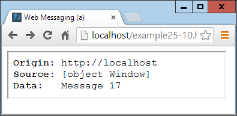

Other HTML5 Features
In this final chapter on HTML5, I explain how to use geolocation, local storage, and
web workers; show you how to allow web apps to run offline; and demonstrate the
use of in-browser dragging and dropping.
Strictly speaking, most of these features (like much of HTML5) aren’t really exten‐
sions to HTML, because you access them with JavaScript rather than with HTML
markup. They are simply technologies that are being embraced by browser develop‐
ers, and have been given the handy umbrella name of HTML5.
This means, though, that you need to have fully understood the JavaScript tutorial in
this book in order to use them properly. That said, once you get the hang of them,
you’ll wonder how you ever did without these powerful new features.
Geolocation and the GPS Service
The
GPS (Global Positioning Satellite)
service consists of multiple satellites orbiting
the earth whose positions are very precisely known. When a GPS-enabled device
tunes into them, the different times at which signals from these various satellites
arrive enable the device to quite accurately know where it is; because the speed of
light (and therefore radio waves) is a known constant, the time it takes a signal to get
from a satellite to a GPS device indicates the satellite’s distance.
By noting the different times at which signals arrive from different satellites, which
are in precisely known orbital locations at any one time, a simple triangulation calcu‐
lation gives the device its position relative to the satellites within a few meters or less.
Many mobile devices, such as phones and tablets, have GPS chips and can provide
this information. But some don’t, others have them tuned off, and others may be used
indoors where they are shielded from the GPS satellites and therefore cannot receive
any signals. In these cases, additional techniques may be used to attempt to determine
your location.
Other Location Methods
If your device has mobile phone hardware but not GPS, it may attempt to triangulate
its location by checking the timing of signals received from the various communica‐
tion towers with which it can communicate (and whose positions are very precisely
known). If there are a few towers, this can get almost as close to your location as GPS.
But where there’s only a single tower, the signal strength can be used to determine a
rough radius around the tower, and the circle it creates represents the area in which
you are likely to be located. This could place you anywhere within a mile or two of
your actual location, down to within a few tens of meters.
Failing that, there may be known Wi-Fi access points whose positions are known
within range of your device, and since all access points have a unique identifying
address called a
MAC (Media Access Control)
address, a reasonably good approxima‐
tion of location can be obtained, perhaps to within a street or two. This is the type of
information that Google Street View vehicles have been collecting.
And if that fails, the
IP (Internet Protocol)
address used by your device can be queried
and used as a rough indicator of your location. Often, though, this provides only the
location of a major switch belonging to your Internet provider, which could be doz‐
ens or even hundreds of miles away. But at the very least, your IP address can (usu‐
ally) narrow down the country and sometimes the region you are in.
IP addresses are commonly used by media companies for restrict‐
ing playback of their content by territory. However, it’s a simple
matter to set up proxy servers that use a forwarding IP address (in
the territory that is blocking outside access) to fetch and pass con‐
tent through the blockade directly to a “foreign” browser. Proxy
servers are also often employed to disguise a user’s real IP address
or bypass censorship restrictions, and can be shared across many
users on a Wi-Fi hotspot (for example). Therefore, if you locate
someone by IP address, you can’t be completely sure that you have
identified the right location, or even country, and should treat this
information as only a best guess.
Geolocation and HTML5
In
Chapter 22
, I briefly introduced HTML5 geolocation. Now it’s time to look at it in
depth, starting with the example I gave you before, shown again in
Example 25-1
.
Example 25-1. Displaying a map of your current location
<!DOCTYPE html>
<html>
<head>
<title>Geolocation Example</title>
<script src='OSC.js'></script>
<script src="https://maps.googleapis.com/maps/api/js?sensor=false"></script>
</head>
<body>
<div id='status'></div>
<div id='map'></div>
<script>
if (typeof navigator.geolocation == 'undefined')
alert("Geolocation not supported.")
else
navigator.geolocation.getCurrentPosition(granted, denied)
function granted(position)
{
O('status').innerHTML = 'Permission Granted'
S('map').border = '1px solid black'
S('map').width = '640px'
S('map').height = '320px'
var lat = position.coords.latitude
var long = position.coords.longitude
var gmap = O('map')
var gopts =
{
center: new google.maps.LatLng(lat, long),
zoom: 9, mapTypeId: google.maps.MapTypeId.ROADMAP
}
var map = new google.maps.Map(gmap, gopts)
}
function denied(error)
{
var message
switch(error.code)
{
case 1: message = 'Permission Denied'; break;
case 2: message = 'Position Unavailable'; break;
case 3: message = 'Operation Timed Out'; break;
case 4: message = 'Unknown Error'; break;
}
O('status').innerHTML = message
}
</script>
</body>
</html>
Let’s walk through this code and see how it works, starting with the
<head>
section,
which displays a title; loads in the
OSC.js
file containing the
O
,
S
, and
C
functions I
provided to make accessing HTML elements from JavaScript easier; and then also
pulls in the JavaScript code for the Google Maps service, which is drawn on later in
the program.
After this, two
<div>
elements are created—one for displaying the connection status,
and the other for the map:
<div id='status'></div>
<div id='map'></div>
The remainder of the document is JavaScript, which immediately starts by interrogat‐
ing the
navigator.geolocation
property. If the value returned is
undefined
, then
geolocation is not supported by the browser and an error alert window is popped up.
Otherwise, the
getCurrentPosition
method of the property is called, passing it the
names of two functions:
granted
and
denied
(remember that by passing function
names, we pass the actual function code, not the result of calling the function, which
would be the case if the function names had brackets attached):
navigator.geolocation.getCurrentPosition(granted, denied)
These functions appear later in the script and are for handling the two possibilities of
permission to provide the user’s location data:
granted
or
denied
. The
granted
func‐
tion comes first and is entered only if the data can be accessed.
In this function, the
innerHTML
property of the
div
element with the ID of
status
is
set to the string
Permission Granted
to indicate success during the delay while the
map is being fetched. Then the
map
div
has some CSS styles applied to give it a border
and set its dimensions:
O('status').innerHTML = 'Permission Granted'
S('map').border = '1px solid black'
S('map').width = '640px'
S('map').height = '320px'
Next, the variables
lat
and
long
are given the values returned by the geolocation rou‐
tines in the browser, and the object
gmap
is created to access the
map
div
element:
var lat = position.coords.latitude
var long = position.coords.longitude
var gmap = O('map')
After this, the object
gopts
is populated with the values in
lat
and
long
, the zoom
level is set (in this case to 9), and the
ROADMAP
map type is selected:
var gopts =
{
center: new google.maps.LatLng(lat, long),
zoom: 9, mapTypeId: google.maps.MapTypeId.ROADMAP
}
Last, in this function, we create a new
map
object by passing
gmap
and
gopts
to the
Map
method of the
google.maps
object (the code for which you will recall was loaded
in just after the
OSC.js
file).
var map = new google.maps.Map(gmap, gopts)
If permission is granted to access the user’s location, the result looks like
Figure 25-1
.

Figure 25-1. An interactive map of the user’s location is displayed
If permission is denied or there is another issue, an error message is the only thing
displayed, as output to the
innerHTML
property of the
status
div
by the
denied
func‐
tion, according to the problem encountered:
switch(error.code)
{
case 1: message = 'Permission Denied'; break;
case 2: message = 'Position Unavailable'; break;
case 3: message = 'Operation Timed Out'; break;
case 4: message = 'Unknown Error'; break;
}
O('status').innerHTML = message
The Google map will be fully interactive and zoomable by the user, who can also
change the map type to satellite imagery.
You can set a different zoom level or imagery type by providing different values to the
gopts
object. For example, a value of
1
for
zoom
will zoom out the furthest, and
20
will zoom in the most. A value of
SATELLITE
for the
google.maps.MapTypeId
prop‐
erty will switch to satellite imagery, or
HYBRID
will combine map and satellite data.
The
sensor=false
setting from the tail of the URL where the script
is loaded in (near the start of the document), should be set to
true
if you know that the user’s device has a GPS sensor; otherwise,
leave it as it is. If you simply want to display a Google map for a
specific location, and not access the user’s location data, you can
use the core code in the
granted
function, replacing the
lat
and
long
(and other) values with ones of your choosing. Also, if you
would prefer to use Bing maps instead of Google, refer to
http://
tinyurl.com/bingmapsapi
, or the following long URL:
http://micro
soft.com/web/post/using-the-bing-maps-api
.
Local Storage
Cookies are an essential part of the modern Internet because they enable websites to
save on each user’s machine small snippets of information that can be used for track‐
ing purposes. Now this isn’t as ominous as it sounds, because most of the tracking
going on helps web surfers by saving usernames and passwords, keeping them logged
into a social network such as Twitter or Facebook, and more.
Cookies can also locally save your preferences for the way you access a website (rather
than having those settings stored on the website’s server) or can be used to keep track
of a shopping cart as you build up an order on an ecommerce website.
But yes, they can also be used more aggressively to track the websites you frequent
and gain a picture of your interests to try to target advertising more effectively. That’s
why the European Union now requires all websites within its borders to alert you to
this, and let you disable cookies if you so choose.
But, as a web developer, think how useful it can be keeping data on user’s devices,
especially if you have a small budget for computer servers and disk space. For exam‐
ple, you could create in-browser web apps and services for editing word processing
documents, spreadsheets, and graphic images, saving all this data offsite on users’
computers and keeping your server purchasing budget as low as possible.
From the user’s point of view, think about how much faster a document can be loaded
up locally than from across the Web, especially on a slow connection. Plus, there’s
more security if you know that a website is not storing copies of your documents. Of
course, you can never guarantee that a website or web app is totally secure, and
should never work on highly sensitive documents using software (or hardware) that
can go online. But for minimally private documents such as family photographs, you
might feel more comfortable using a web app that saves locally than one that saves
files to an external server.
Using Local Storage
The biggest problem with using cookies for local storage is that you can save a maxi‐
mum of 4KB of data in each. Cookies also have to be passed back and forth on every
page reload. And, unless your server uses
SSL (Secure Sockets Layer)
encryption, each
time a cookie is transmitted, it travels in the clear.
But with HTML5, you have access to a much larger local storage space (typically
between 5MB and 10MB per domain depending on the browser) that remains over
page loads, and between website visits (and even after powering a computer down
and back up again). Also, the local storage data is not sent to the server on each page
load.
You handle local storage data in key/value pairs. The key is the name assigned for ref‐
erencing the data, and the value can hold any type of data, but it is saved as a string.
All data is unique to the current domain, and for security reasons any local storage
created by websites with different domains is separate from the current local storage,
and is not accessible by any domain other than the one that stored the data.
The localStorage Object
You gain access to local storage by means of the
localStorage
object. To test whether
this object is available, you query its type to check whether or not it has been defined,
like this:
if (typeof localStorage == 'undefined')
{
// Local storage is not available, tell the user and quit.
// Or maybe offer to save data on the web server instead?
}
How you handle the lack of local storage being available will depend on what you
intend to use it for, so the code you place inside the
if
statement will be up to you.
Once you’ve ascertained that local storage is available, you can start making use of it
with the
setItem
and
getItem
methods of the
localStorage
object, like this:
localStorage.setItem('username', 'ceastwood')
localStorage.setItem('password', 'makemyday')
To later retrieve this data, pass the keys to the
getItem
method, like this:
username = localStorage.getItem('username')
password = localStorage.getItem('password')
Unlike saving and reading cookies, you can call these methods at any time you like,
not simply before any headers have been sent by the web server. The saved values will
remain in local storage until erased in the following manner:
localStorage.removeItem('username')
localStorage.removeItem('password')
Or, you can totally wipe the local storage for the current domain by calling the
clear
method, like this:
localStorage.clear()
Example 25-2
combines the preceding examples into a single document that displays
the current values of the two keys in a pop-up alert message, which initially will be
null
. Then the keys and values are saved to local storage, retrieved, and redisplayed,
this time having assigned values. Finally, the keys are removed and then an attempt at
retrieving these values is again made, but the returned values are once again
null
.
Figure 25-2
shows the second of these three alert messages.
Example 25-2. Getting, setting, and removing local storage data
if (typeof localStorage == 'undefined')
{
alert("Local storage is not available")
}
else
{
username = localStorage.getItem('username')
password = localStorage.getItem('password')
alert("The current values of 'username' and 'password' are\n\n" +
username + " / " + password + "\n\nClick OK to assign values")
localStorage.setItem('username', 'ceastwood')
localStorage.setItem('password', 'makemyday')
username = localStorage.getItem('username')
password = localStorage.getItem('password')
alert("The current values of 'username' and 'password' are\n\n" +
username + " / " + password + "\n\nClick OK to clear values")
localStorage.removeItem('username')
localStorage.removeItem('password')
username = localStorage.getItem('username')
password = localStorage.getItem('password')
alert("The current values of 'username' and 'password' are\n\n" +
username + " / " + password)
}
Figure 25-2. Two keys and their values are read from local storage
You are not restricted to just storing usernames and passwords;
you can include virtually any and all data, and as many key/value
pairs as you like, up to the available storage limit for your domain.
Web Workers
With
web workers
, you can create sections of JavaScript code that will run in the back‐
ground, without having to set up and monitor interrupts. Instead, whenever it has
something to report, your background process communicates with the main Java‐
Script through the use of an event.
This means the JavaScript interpreter gets to decide how to allocate time slices most
efficiently, and your code only needs to worry about communicating with the back‐
ground task whenever there’s information to convey.
Example 25-3
shows how you can set up web workers to compute a repetitive task in
the background—in this instance, calculating prime numbers.
Example 25-3. Setting up and communicating with a web worker
<!DOCTYPE html>
<html>
<head>
<title>Web Workers</title>
<script src='OSC.js'></script>
</head>
<body>
Current highest prime number:
<span id='result'>0</span>
<script>
if (!!window.Worker)
{
var worker = new Worker('worker.js')
worker.onmessage = function (event)
{
O('result').innerHTML = event.data;
}
}
else
{
alert("Web workers not supported")
}
</script>
</body>
</html>
This example first creates a
<span>
element with the ID of
result
in which output
from the web worker will be placed. Then, in the
<script>
section,
window.Worker
is
tested via a
!!
pair of
not
operators. This has the effect of returning a Boolean value
of
true
if the
Worker
method exists, and
false
otherwise. If it is not
true
, a message
is displayed in the
else
section, alerting us that web workers are not available.
Otherwise, a new
worker
object is created by calling
Worker
, passing it the filename
worker.js
(shown shortly). Then the
onmessage
event of the new
worker
object is
attached to an anonymous function that places any message passed to it by
worker.js
into the
innerHTML
property of the previously created
<span>
element.
The web worker itself is saved in the file
worker.js
, in
Example 25-4
.
Example 25-4.
The worker.js web worker
var n = 1
search: while (true)
{
n += 1
for (var i = 2; i <= Math.sqrt(n); i += 1)
{
if (n % i == 0) continue search
}
postMessage(n)
}
This file assigns the value
1
to the variable
n
. It then loops continuously, incrementing
n
and checking it for primality by a brute-force method of testing all values from
1
to
the square root of
n
to see if they divide exactly into
n
, with no remainder. Should a
factor be found, the
continue
command stops the brute-force attack immediately
because the number is not prime, and starts processing at the next higher value of
n
.
But if all possible factors are tested and none result in a zero remainder, then
n
must
be prime, so its value is passed to
postMessage
, which sends a message back to the
onmessage
event of the object that set up this web worker.
The result looks like the following:
Current highest prime number: 30477191
To stop a web worker from running, issue a call to the
terminate
method of the
worker
object, like this:
worker.terminate()
If you wish to stop this particular example from running, you can
enter the following into your browser’s address bar:
javascript:worker.terminate()
Also note that due to the way Chrome handles security, you cannot
use web workers on a file system, only from a web server (or run‐
ning the files from
localhost
on a development server such as
Zend Server, detailed in
Chapter 2
).
Offline Web Applications
By providing the right information to a browser, you can tell it how to download all
the components of a web page to enable it to be loaded and run offline. The main file
you need is a manifest file with the file extension
.appcache
. To illustrate a simple web
app, I chose to create a clock, so the manifest file is given the filename
clock.appcache
and looks like
Example 25-5
.
Example 25-5.
The clock.appcache file
CACHE MANIFEST
clock.html
OSC.js
clock.css
clock.js
The first line in this file declares it to be a manifest file. The lines following list the
files the browser needs to download and store, starting with
Example 25-6
, the
clock.html
file, and followed by the
OSC.js
file, which is the same one used by many
examples in this book.
Example 25-6.
The clock.html file
<!DOCTYPE html>
<html manifest='clock.appcache'>
<head>
<title>Offline Web Apps</title>
<script src='OSC.js'></script>
<script src='clock.js'></script>
<link rel='stylesheet' href='clock.css'>
</head>
<body>
<p>The time is: <output id='clock'></output></p>
</body>
</html>
This file declares that it has a manifest file available from within the
<html>
tag:
<html manifest='clock.appcache'>
To support offline web apps, you will need to add the MIME type
text/cache-manifest
for
the
file
extension
.appcache
to
your
server, in order for it to send the manifest file using the correct
type. There’s a neat shortcut you can use for this, which is to create
a file called
.htaccess
in the same folder as the files to be made avail‐
able offline, with the following contents:
AddType text/cache-manifest .appcache
The files
OSC.js
,
clock.js
, and
clock.css
are then imported and used by the document.
The JavaScript in
clock.js
is listed in
Example 25-7
.
Example 25-7. The clock.js file
setInterval(function()
{
O('clock').innerHTML = new Date()
}, 1000)
This is a very simple anonymous function attached to an interval that repeats once a
second to save the current date and time into the
innerHTML
property of the
<output>
element that has the ID of
clock
.
The final file is the
clock.css
file (see
Example 25-8
), which simply applies bold styling
to the
<output>
element.
Example 25-8. The clock.css file
output { font-weight:bold; }
As long as the
clock.appcache
file lists them all, these four files (
clock.html
,
OSC.js
,
clock.css
, and
clock.js
) together make up a working offline web application, which will
be downloaded and made available locally by any web browser that understands off‐
line web apps. When run, the output looks like this:
The time is: Thu Jul 19 2018 15:24:26 GMT+0000 (GMT Standard Time)
For details on the offline web application specifications, you can
check out the official website at
http://tinyurl.com/offlinewebapps
.
Drag and Drop
You can easily support dragging and dropping of objects on a web page by setting up
event
handlers
for
the
ondragstart
,
ondragover
,
and
ondrop
events,
as
in
Example 25-9
.
Example 25-9. Dragging and dropping objects
<!DOCTYPE HTML>
<html>
<head>
<title>Drag and Drop</title>
<script src='OSC.js'></script>
<style>
#dest {
background:lightblue;
border :1px solid #444;
width :320px;
height :100px;
padding :10px;
}
</style>
</head>
<body>
<div id='dest' ondrop='drop(event)' ondragover='allow(event)'></div><br>
Drag the image below into the above element<br><br>
<img id='source1' src='image1.png' draggable='true' ondragstart='drag(event)'>
<img id='source2' src='image2.png' draggable='true' ondragstart='drag(event)'>
<img id='source3' src='image3.png' draggable='true' ondragstart='drag(event)'>
<script>
function allow(event)
{
event.preventDefault()
}
function drag(event)
{
event.dataTransfer.setData('image/png', event.target.id)
}
function drop(event)
{
event.preventDefault()
var data=event.dataTransfer.getData('image/png')
event.target.appendChild(O(data))
}
</script>
</body>
</html>
After setting up the HTML, title, and loading in the
OSC.js
file, this document styles
the
div
element with the ID of
dest
, giving it a background color, border, set dimen‐
sions, and padding.
Then, in the
<body>
section, the
div
element is created, and its
ondrop
and
ondrag
over
events have the event handler functions
drop
and
allow
attached to them. After
this there’s some text, and then three images are displayed with their
draggable
prop‐
erties set to
true
, and the function
drag
is attached to the
ondragstart
event of each.
In the
<script>
section, the
allow
event handler function simply prevents the default
action for dragging (which is to disallow it), while the
drag
event handler function
calls the
setData
method of the
dataTransfer
object of the event, passing it the
MIME type
image/png
and the
target.id
of the event (which is the object being
dragged). The
dataTransfer
object holds the data that is being dragged during a
drag-and-drop operation.
Finally, the
drop
event handler function also intercepts its default action so that drop‐
ping is allowed, and then it fetches the contents of the object being dragged from the
dataTransfer
object, passing it the MIME type of the object. Then the dropped data
is appended to the target (which is the
dest
div) using its
appendChild
method.
If you try this example for yourself, you’ll be able to drag and drop the images into
the
div
element, where they will stay, as shown in
Figure 25-3
.
Figure 25-3. Two images have been dragged and dropped
Other events you can attach to include
ondragenter
for when a drag operation enters
an element,
ondragleave
for when one leaves an element, and
ondragend
for when a
dragging operation ends, which you can use (for example) to modify the cursor dur‐
ing these operations.
Cross-Document Messaging
You’ve already seen messaging in use a little earlier, in the web worker section. I didn’t
go into any details, however, as it wasn’t the core topic being discussed, and the mes‐
sage was being posted only to the same document anyway. But for obvious security
reasons, cross-document messaging does need to be applied with caution, so you
need to fully understand its workings if you plan to use it.
Before HTML5, browser developers disallowed cross-site scripting, but as well as
blocking potential attack sites, this prevented communication between legitimate
pages. Document interaction of any kind generally had to occur through Ajax and a
third-party web server, which was cumbersome and fiddly to build and maintain.
But web messaging now allows scripts to interact across these boundaries by using
some sensible security restraints to prevent malicious hacking attempts. It is achieved
through use of the
postMessage
method, allowing plain-text messages to be sent
from one domain to another.
This requires that JavaScript first obtain the
Window
object of the receiving document,
letting messages post to a variety of other windows, frames, or iframes directly related
to the sender’s document. The received message event has the following attributes:
data
The incoming message
origin
The origin of the sender document, including the scheme, hostname, and port
source
The source window of the sender document
The code to send messages is just a single instruction, in which you pass the message
to be sent and the domain to which it applies, as in
Example 25-10
.
Example 25-10. Sending web messages to an iframe
<!DOCTYPE HTML>
<html>
<head>
<title>Web Messaging (a)</title>
<script src='OSC.js'></script>
</head>
<body>
<iframe id='frame' src='example25-11.html' width='360' height='75'></iframe>
<script>
count = 1
setInterval(function()
{
O('frame').contentWindow.postMessage('Message ' + count++, '*')
}, 1000)
</script>
</body>
</html>
Here the usual use is made of the
OSC.js
file to pull in the
O
function, and then an
iframe element with the ID of
frame
is created, which loads in
Example 25-11
. Then,
within the
<script>
section, the variable
count
is initialized to
1
and a repeating
interval is set up to occur every second to post the string
'Message '
(using the
post
Message
method) along with the current value of
count
, which is then incremented.
The
postMessage
call is attached to the
contentWindow
property of the iframe object,
not the iframe object itself. This is important because web messaging requires posts to
be made to a window, not to an object within a window.
Example 25-11. Receiving messages from another document
<!DOCTYPE HTML>
<html>
<head>
<title>Web Messaging (b)</title>
<style>
#output {
font-family:"Courier New";
white-space:pre;
}
</style>
<script src='OSC.js'></script>
</head>
<body>
<div id='output'>Received messages will display here</div>
<script>
window.onmessage = function(event)
{
O('output').innerHTML =
'<b>Origin:</b> ' + event.origin + '<br>' +
'<b>Source:</b> ' + event.source + '<br>' +
'<b>Data:</b> ' + event.data
}
</script>
</body>
</html>
This example sets up a little styling to make output clearer, and then creates a
div
element with the ID
output
, in which the contents of received messages will be
placed. In the
<script>
section, there’s a single anonymous function attached to the
onmessage
event of the window. In this function, the
event.origin
,
event.source
,
and
event.data
property values are then displayed, as shown in
Figure 25-4
.

Figure 25-4. The iframe has so far received 17 messages
Web messaging works only across domains, so you cannot test it by loading files in
from a file system; you must use a web server. As you can see from
Figure 25-4
, the
origin is
http://localhost
because these examples are running on a local development
server. The source is the
Window
object, and the current message value is
Message 17
.
At the moment,
Example 25-10
is not at all secure because the domain value passed to
postMessage
is the wildcard
*
:
O('frame').contentWindow.postMessage('Message ' + count++,'*')
To direct messages only to documents originating from a particular domain, you can
change this parameter. In the current case, a value of
http://localhost
would
ensure that only documents loaded from the local server will be sent any messages:
O('frame').contentWindow.postMessage('Message ' + count++,'http://localhost')
Likewise, as it stands, the listener program displays any and all messages it receives.
This is also not a very secure state of affairs, because malicious documents also
present in the browser can attempt to send messages that unwary listener code in
other documents might otherwise access. Therefore, you can restrict the messages
your listeners react to by using an
if
statement, like this:
window.onmessage = function(event)
{
if (event.origin) == 'http://localhost')
{
O('output').innerHTML =
'<b>Origin:</b> ' + event.origin + '<br>' +
'<b>Source:</b> ' + event.source + '<br>' +
'<b>Data:</b> ' + event.data
}
}
If you always use the proper domain for the site you are working
with, your web messaging communications will be more secure.
However, be aware that since messages are sent in the clear, there
may be insecurities in some browsers or browser plug-ins that
might make this kind of communication insecure. One way to
boost your security, then, is to create your own obfuscation or
encryption scheme for all your web messages, and also consider
introducing your own two-way communication protocols to verify
each message as being authentic.
Normally, you won’t alert the user to the
origin
or
source
values, and will simply
make use of them for security checking. These examples, however, display those val‐
ues to help you experiment with web messaging and see what is going on. As well as
iframes, documents in pop-up windows and other tabs may also talk to each other
using this method.
Microdata
Microdata
is a subset of HTML designed to provide metadata to a document in order
to make it have meaning to software, just as it has meaning to a reader of the docu‐
ment. Microdata makes available the following new tag attributes:
itemscope
,
item
type
,
itemid
,
itemref
,
and
itemprop
.
Using
these,
you
can
clearly
define
the
properties of an item such as a book, providing a range of information that a com‐
puter can use to understand, for example, its authors, publishers, contents, and so on.
Or, more frequently these days, microdata is important for search engines and social
networking sites.
Example 25-12
creates a short bio for George Washington as if it
were a profile on a social networking site, with microdata added to the various ele‐
ments (shown highlighted in bold). The result looks like
Figure 25-5
, which will look
the same with or without microdata, because it is never visible to the user.
Example 25-12. Adding microdata to HTML
<!DOCTYPE html>
<html>
<head>
<title>Microdata</title>
</head>
<body>
<section
itemscope itemtype='http://schema.org/Person'
>
<img
itemprop='image'
src='gw.jpg' alt='George Washington'
align='left' style='margin-right:10px'>
<h2
itemprop='name'
>George Washington</h2>
<p>I am the first <span
itemprop='jobTitle'
>US President</span>.
My website is: <a
itemprop='url'
href='http://georgewashington.si.edu'>georgewashington.si.edu</a>.
My address is:</p>
<address
itemscope itemtype='http://schema.org/PostalAddress'
itemprop='address'>
<span
itemprop='streetAddress'
>1600 Pennsylvania Avenue</span>,<br>
<span
itemprop='addressLocality'
>Washington</span>,<br>
<span
itemprop='addressRegion'
>DC</span>,<br>
<span
itemprop='postalCode'
>20500</span>,<br>
<span
itemprop='addressCountry'
>United States</span>.
</address>
</section>
</body>
</html>

Figure 25-5. This document contains microdata, which is not visible
Browsers don’t yet really do anything with microdata, but it’s still very worth getting
to know it. Using the right microdata gives lots of information to search engines like
Google or Bing, and may help to promote clearly annotated pages in the rankings as
compared to sites that don’t implement microdata.
However, at some point, browsers may also find a use for this information, and you’ll
be able to determine whether or not they support microdata by checking whether the
getItems
method exists, like this:
if (!!document.getItems)
{
// Microdata is supported
}
else
{
// Microdata is not supported
}
The
!!
pair of
not
operators is a shorthand way of returning a Boolean value repre‐
senting the existence (or lack thereof) of the
getItems
method. If it exists, then
true
is returned and microdata is supported; otherwise,
false
is returned.
Currently, only the Mozilla Firefox and Opera browsers support accessing microdata,
but the other browsers are sure to follow soon. When they do, you’ll be able to extract
this data in the following manner, in which (after the page has loaded) the
data
object
is retrieved from a call to
getItems
, and the value for the key
'jobTitle'
(just as an
example) is retrieved by accessing the
data
object’s
properties
object, and then
fetching the latter object’s
textContent
property:
window.onload = function()
{
if (!!document.getItems)
{
data = document.getItems('http://schema.org/Person')[0]
alert(data.properties['jobTitle'][0].textContent)
}
}
Browsers that support this feature will display as
Figure 25-6
, but other browsers will
not trigger the pop-up window.

Figure 25-6. Displaying the value for the ‘jobTitle’ microdata key
Google has stated that it definitely uses microdata when it finds it, and that microdata
is also the preferred snippet format for Google+, so it’s well worth starting to add it to
your HTML where applicable. For a complete breakdown of the myriad of microdata
properties available, check out
http://schema.org
, which is also the reference for the
microdata schemes as declared in the
itemType
properties.
Other HTML5 Tags
A number of other new HTML5 tags that have not yet been implemented in many
browsers, and therefore I won’t cover them (particularly since their specs could
change). But, for the sake of completeness, these tags are
<article>
,
<aside>
,
<details>
,
<figcaption>
,
<figure>
,
<footer>
,
<header>
,
<hgroup>
,
<keygen>
,
<mark>
,
<menuitem>
,
<meter>
,
<nav>
,
<output>
,
<progress>
,
<rp>
,
<rt>
,
<ruby>
,
<section>
,
<summary>
,
<time>
, and
<wbr>
. You can get more information on these
and all other HTML5 tags at
http://tinyurl.com/h5markup
(check out the elements
sporting a NEW icon).